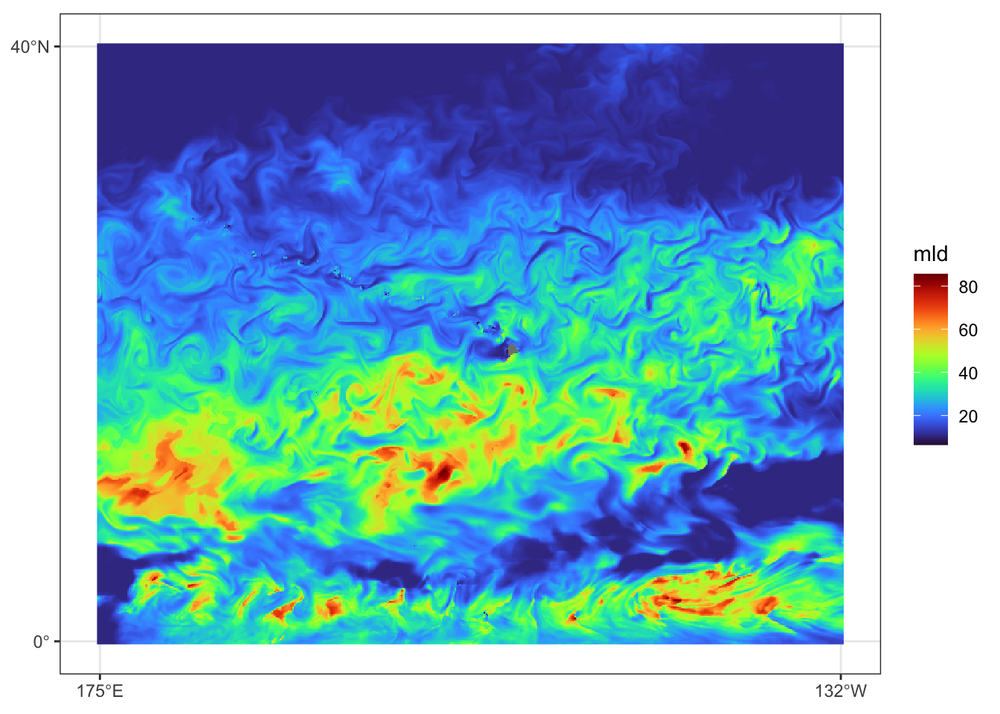
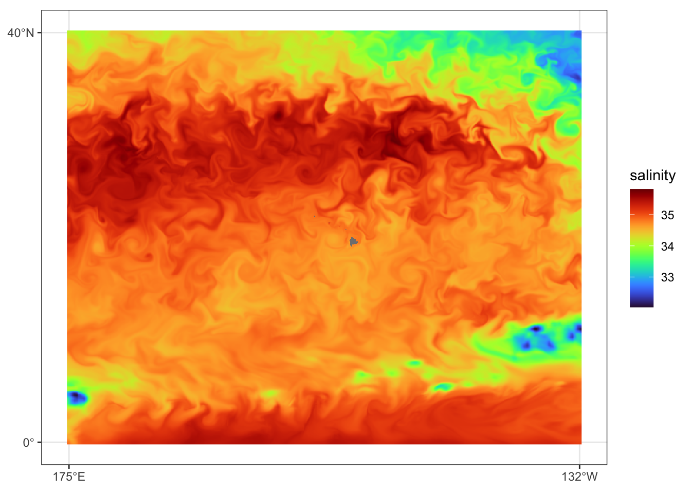
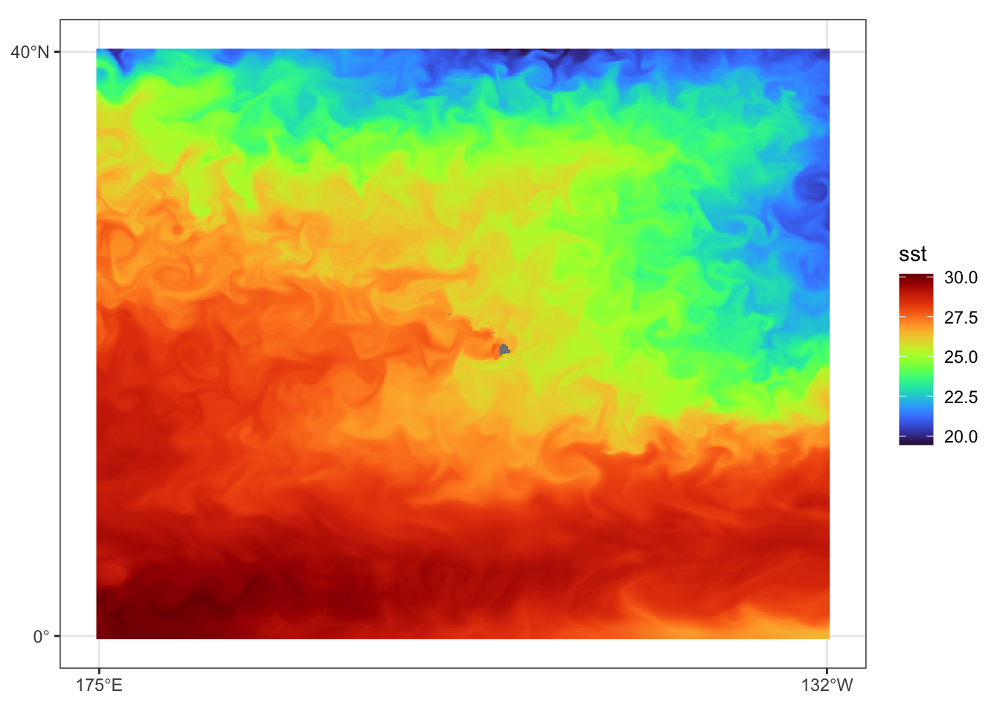
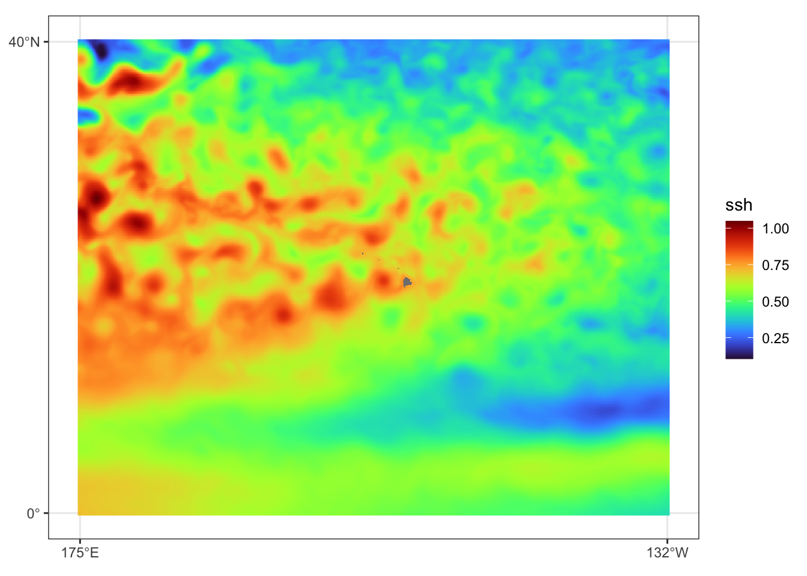
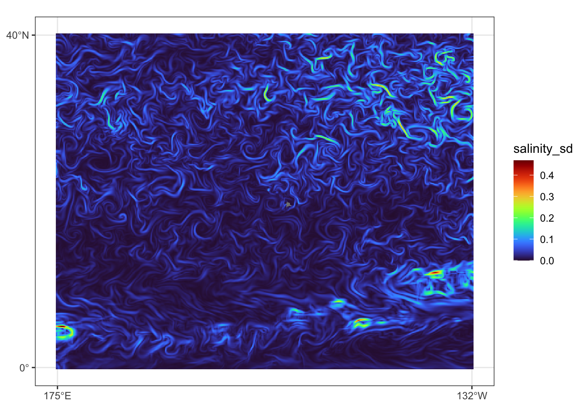
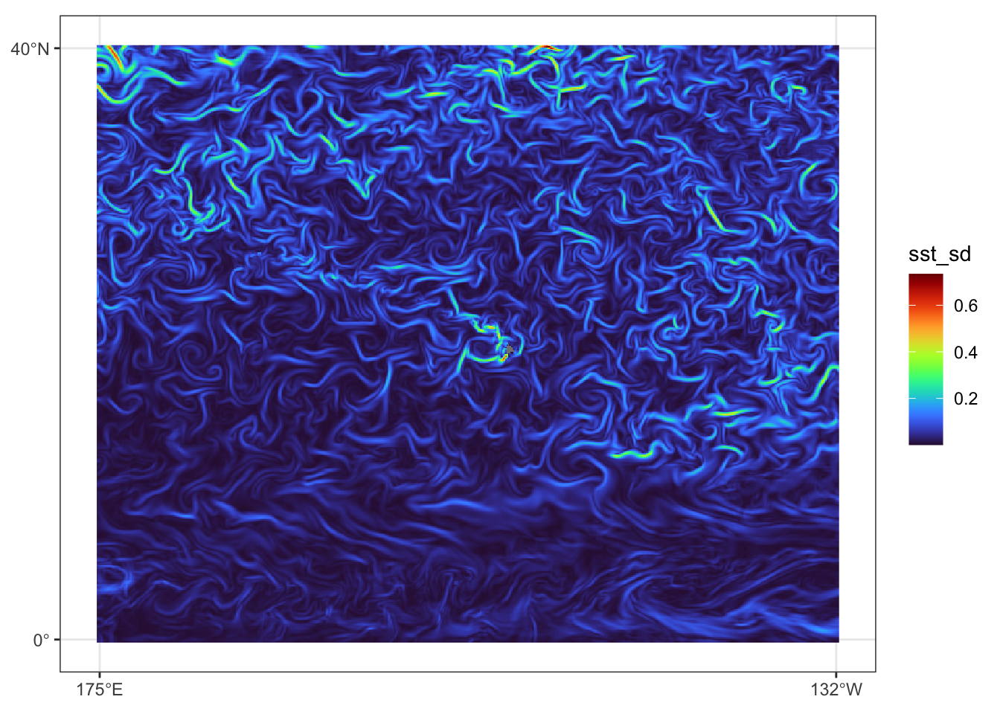
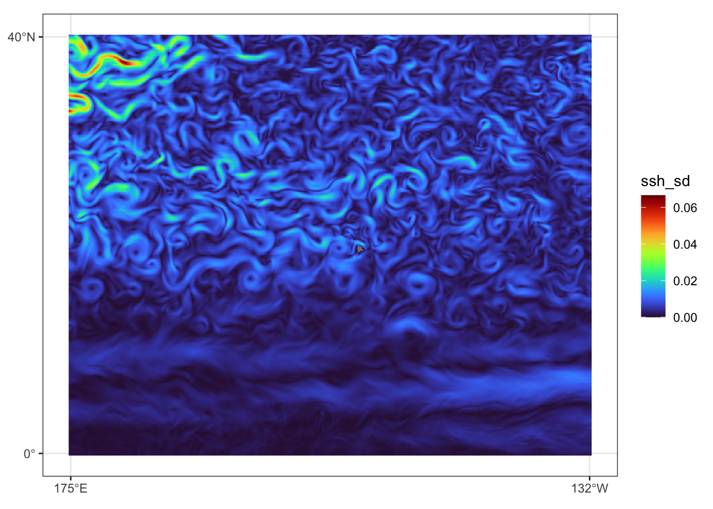

library(here)
library(terra)
library(sf)
library(lubridate)
library(picMaps)
library(rnaturalearth)
library(reticulate)
library(tidyverse)
library(foreach)
library(foreach)
library(future)
library(doFuture)
library(progressr)
library(ggplot2)
library(ggspatial)
localwd <- here("_R_code","task_5_download_prediction_data")
copernicus_data <- file.path(localwd, "copernicus_data")
pred_dir <- file.path(localwd, "output")
if(!dir.exists(copernicus_data)) dir.create(copernicus_data)
if(!dir.exists(pred_dir)) dir.create(pred_dir)
reticulate::use_virtualenv("cm_py", required = TRUE)
cm <- reticulate::import("copernicusmarine")
lg <- reticulate::import("logging")
lg$getLogger("copernicusmarine")$setLevel('WARN')Download Environmental Variables for Density Prediction
Packages and Python Preparation
Defining the Central Pacific
cenpac <- picMaps::cenpac()Downloading the environmental variables
years <- c(2017, 2020:2024)
bound <- sf::st_bbox(cenpac)
with_progress({
pb <- progressor(along = years)
pred_download <- foreach(i = seq_along(years),
.options.future = list(seed = TRUE)) %do%
{
time_span <- paste(years[i],c("-07-01","-12-31"), sep="")
dataset_id <- ifelse(years[i] < 2021,
"cmems_mod_glo_phy_my_0.083deg_P1D-m",
"cmems_mod_glo_phy_myint_0.083deg_P1D-m")
nc_dl <- cm$subset(
dataset_id = dataset_id,
variables = as.list(c("mlotst","so","thetao","zos")),
minimum_longitude = bound$xmin - 1/6,
maximum_longitude = bound$xmax + 1/6,
minimum_latitude = bound$ymin - 1/6,
maximum_latitude = bound$ymax + 1/6,
start_datetime = time_span[1],
end_datetime = time_span[2],
minimum_depth = 0.5,
maximum_depth = 0.5,
coordinates_selection_method = "outside",
dataset_version = "202311",
disable_progress_bar = FALSE,
skip_existing = TRUE,
output_directory = copernicus_data
)
pb()
data.frame(year=years[i], filename=nc_dl$filename)
}
})
# plan("sequential")
pred_download <- do.call(rbind, pred_download)
write.csv(pred_download, file.path(copernicus_data, "pred_download.csv"), row.names = FALSE)Processing the raw netCDF files
# localwd <- here("_R_code","task_5_download_prediction_data")
# copernicus_data <- file.path(localwd, "copernicus_data")
# pred_dir <- file.path(localwd, "output")
# pred_download <- read.csv(file.path(copernicus_data, "pred_download.csv"))
years <- pred_download$year
with_progress({
pb <- progressor(along = years)
for(i in seq_along(years)){
filenm <- pred_download$filename[i]
env <- terra::rast(file.path(copernicus_data, filenm))
vnms <- terra::varnames(env)
new_vnms <- c("mld","salinity","sst","ssh")
dates <- time(env) |> unique() |> sort()
subs_idx <- which(rep(1:3, length=length(dates))==1)
out_env <- NULL
for(j in seq_along(vnms)){
tmp_env <- toMemory(env[vnms[j]])
names(tmp_env) <- rep(new_vnms[j],nlyr(tmp_env))
tmp_env <- tmp_env[[subs_idx]]
tmp_env <- terra::project(tmp_env, "+proj=longlat +ellps=WGS84 +lon_wrap=180 +datum=WGS84 +no_defs")
tmp_env <- terra::focal(tmp_env, 3, mean, na.policy="only", na.rm=TRUE) # Make sure there are no cells with missing data
out_env <- c(out_env, tmp_env)
}
out_env <- do.call(c, out_env)
# add focal sd
for(j in seq_along(vnms)){
tmp_env <- out_env[[names(out_env)==new_vnms[j]]]
tmp_env_sd <- focal(tmp_env, 3, sd, na.rm=TRUE)
names(tmp_env_sd) <- paste(names(tmp_env_sd),"sd",sep="_")
out_env <- c(out_env,tmp_env_sd)
}
writeRaster(out_env, file.path(pred_dir, paste0("cenpac_",years[i], "_env.tif")), overwrite=TRUE)
pb()
}
})Prediction data view for July, 31 2023
Attaching package: 'tidyterra'The following object is masked from 'package:stats':
filterLoading required package: viridisLite





